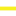

<!DOCTYPE html>

<html lang="en">
<head>
<meta charset="utf-8"/>
<meta content="IE=edge" http-equiv="X-UA-Compatible"/>
<meta content="initial-scale=1,user-scalable=no,maximum-scale=1,width=device-width" name="viewport"/>
<meta content="yes" name="mobile-web-app-capable"/>
<meta content="yes" name="apple-mobile-web-app-capable"/>
<link href="css/leaflet.css" rel="stylesheet"/><link href="http://maxcdn.bootstrapcdn.com/font-awesome/4.6.1/css/font-awesome.min.css" rel="stylesheet"/><link href="css/L.Control.Locate.min.css" rel="stylesheet"/>
<link href="css/qgis2web.css" rel="stylesheet"/>
<link href="css/Control.OSMGeocoder.css" rel="stylesheet"/>
<link href="css/leaflet-measure.css" rel="stylesheet"/>
<style>
        html, body, #map {
            width: 100%;
            height: 100%;
            padding: 0;
            margin: 0;
        }
        </style>
<title></title>
<link href="https://unpkg.com/leaflet-routing-machine@latest/dist/leaflet-routing-machine.css" rel="stylesheet"/></head>
<body>
<div id="map">
</div>
<script src="js/qgis2web_expressions.js"></script>
<script src="js/leaflet.js"></script><script src="js/L.Control.Locate.min.js"></script>
<script src="js/multi-style-layer.js"></script>
<script src="js/leaflet-svg-shape-markers.min.js"></script>
<script src="js/leaflet.rotatedMarker.js"></script>
<script src="js/leaflet.pattern.js"></script>
<script src="js/leaflet-hash.js"></script>
<script src="js/Autolinker.min.js"></script>
<script src="js/rbush.min.js"></script>
<script src="js/labelgun.min.js"></script>
<script src="js/labels.js"></script>
<script src="js/Control.OSMGeocoder.js"></script>
<script src="js/leaflet-measure.js"></script>
<script src="data/Sidewalk_0.js"></script>
<script src="data/Ramp_1.js"></script>
<script src="data/Crossing_2.js"></script>
<script src="data/ParkingforDisabledPeople_3.js"></script>
<script src="data/BusStation_4.js"></script>
<script src="data/Sensor_5.js"></script>
<script>
        var map = L.map('map', {
            zoomControl:true, maxZoom:28, minZoom:1
        })
        var hash = new L.Hash(map);
        map.attributionControl.addAttribution('<a href="https://github.com/tomchadwin/qgis2web" target="_blank">qgis2web</a>');
        L.control.locate().addTo(map);
        var measureControl = new L.Control.Measure({
            primaryLengthUnit: 'feet',
            secondaryLengthUnit: 'miles',
            primaryAreaUnit: 'sqfeet',
            secondaryAreaUnit: 'sqmiles'
        });
        measureControl.addTo(map);
        var bounds_group = new L.featureGroup([]);
        var basemap0 = L.tileLayer('http://{s}.tile.openstreetmap.org/{z}/{x}/{y}.png', {
            attribution: '&copy; <a href="http://openstreetmap.org">OpenStreetMap</a> contributors,<a href="http://creativecommons.org/licenses/by-sa/2.0/">CC-BY-SA</a>',
            maxZoom: 28
        });
        basemap0.addTo(map);
        function setBounds() {
            if (bounds_group.getLayers().length) {
                map.fitBounds(bounds_group.getBounds());
            }
        }
        function pop_Sidewalk_0(feature, layer) {
            var popupContent = '<table>\
                    <tr>\
                        <th scope="row">id</th>\
                        <td>' + (feature.properties['id'] !== null ? Autolinker.link(String(feature.properties['id'])) : '') + '</td>\
                    </tr>\
                    <tr>\
                        <th scope="row">ierarxisi</th>\
                        <td>' + (feature.properties['ierarxisi'] !== null ? Autolinker.link(String(feature.properties['ierarxisi'])) : '') + '</td>\
                    </tr>\
                </table>';
            layer.bindPopup(popupContent, {maxHeight: 400});
        }

        function style_Sidewalk_0_0(feature) {
            if (feature.properties['ierarxisi'] >= 6.990000 && feature.properties['ierarxisi'] <= 25.000000 ) {
                return {
                pane: 'pane_Sidewalk_0',
                opacity: 1,
                color: 'rgba(7,201,39,1.0)',
                dashArray: '',
                lineCap: 'square',
                lineJoin: 'bevel',
                weight: 4.0,
                fillOpacity: 0,
            }
            }
            if (feature.properties['ierarxisi'] >= 2.990000 && feature.properties['ierarxisi'] <= 6.990000 ) {
                return {
                pane: 'pane_Sidewalk_0',
                opacity: 1,
                color: 'rgba(247,240,31,1.0)',
                dashArray: '',
                lineCap: 'square',
                lineJoin: 'bevel',
                weight: 4.0,
                fillOpacity: 0,
            }
            }
            if (feature.properties['ierarxisi'] >= 0.000000 && feature.properties['ierarxisi'] <= 2.990000 ) {
                return {
                pane: 'pane_Sidewalk_0',
                opacity: 1,
                color: 'rgba(233,19,62,1.0)',
                dashArray: '',
                lineCap: 'square',
                lineJoin: 'bevel',
                weight: 4.0,
                fillOpacity: 0,
            }
            }
        }
        map.createPane('pane_Sidewalk_0');
        map.getPane('pane_Sidewalk_0').style.zIndex = 400;
        map.getPane('pane_Sidewalk_0').style['mix-blend-mode'] = 'normal';
        var layer_Sidewalk_0 = new L.geoJson(json_Sidewalk_0, {
            attribution: '<a href=""></a>',
            pane: 'pane_Sidewalk_0',
            onEachFeature: pop_Sidewalk_0,
            style: style_Sidewalk_0_0,
        });
        bounds_group.addLayer(layer_Sidewalk_0);
        map.addLayer(layer_Sidewalk_0);
        function pop_Ramp_1(feature, layer) {
            var popupContent = '<table>\
                    <tr>\
                        <th scope="row">id</th>\
                        <td>' + (feature.properties['id'] !== null ? Autolinker.link(String(feature.properties['id'])) : '') + '</td>\
                    </tr>\
                    <tr>\
                        <td colspan="2"><strong>Κατηγορίες</strong><br />' + (feature.properties['Κατηγορίες'] !== null ? Autolinker.link(String(feature.properties['Κατηγορίες'])) : '') + '</td>\
                    </tr>\
                    <tr>\
                        <th scope="row">x</th>\
                        <td>' + (feature.properties['x'] !== null ? Autolinker.link(String(feature.properties['x'])) : '') + '</td>\
                    </tr>\
                    <tr>\
                        <th scope="row">y</th>\
                        <td>' + (feature.properties['y'] !== null ? Autolinker.link(String(feature.properties['y'])) : '') + '</td>\
                    </tr>\
                </table>';
            layer.bindPopup(popupContent, {maxHeight: 400});
        }

        function style_Ramp_1_0(feature) {
            switch(String(feature.properties['Κατηγορίες'])) {
                case 'Καλή':
                    return {
                pane: 'pane_Ramp_1',
                shape: 'triangle',
                radius: 6.0,
                opacity: 1,
                color: 'rgba(0,0,0,1.0)',
                dashArray: '',
                lineCap: 'butt',
                lineJoin: 'miter',
                weight: 1,
                fill: true,
                fillOpacity: 1,
                fillColor: 'rgba(251,195,53,1.0)',
            }
                    break;
                case 'Ανεκτή':
                    return {
                pane: 'pane_Ramp_1',
                shape: 'triangle',
                radius: 6.0,
                opacity: 1,
                color: 'rgba(0,0,0,1.0)',
                dashArray: '',
                lineCap: 'butt',
                lineJoin: 'miter',
                weight: 1,
                fill: true,
                fillOpacity: 1,
                fillColor: 'rgba(166,249,42,1.0)',
            }
                    break;
            }
        }
        map.createPane('pane_Ramp_1');
        map.getPane('pane_Ramp_1').style.zIndex = 401;
        map.getPane('pane_Ramp_1').style['mix-blend-mode'] = 'normal';
        var layer_Ramp_1 = new L.geoJson(json_Ramp_1, {
            attribution: '<a href=""></a>',
            pane: 'pane_Ramp_1',
            onEachFeature: pop_Ramp_1,
            pointToLayer: function (feature, latlng) {
                var context = {
                    feature: feature,
                    variables: {}
                };
                return L.shapeMarker(latlng, style_Ramp_1_0(feature));
            },
        });
        bounds_group.addLayer(layer_Ramp_1);
        map.addLayer(layer_Ramp_1);
        function pop_Crossing_2(feature, layer) {
            var popupContent = '<table>\
                    <tr>\
                        <th scope="row">id</th>\
                        <td>' + (feature.properties['id'] !== null ? Autolinker.link(String(feature.properties['id'])) : '') + '</td>\
                    </tr>\
                    <tr>\
                        <th scope="row">width</th>\
                        <td>' + (feature.properties['width'] !== null ? Autolinker.link(String(feature.properties['width'])) : '') + '</td>\
                    </tr>\
                </table>';
            layer.bindPopup(popupContent, {maxHeight: 400});
        }

        function style_Crossing_2_0() {
            return {
                pane: 'pane_Crossing_2',
                opacity: 1,
                color: 'rgba(49,44,46,1.0)',
                dashArray: '',
                lineCap: 'round',
                lineJoin: 'round',
                weight: 5.0,
                fillOpacity: 0,
            }
        }
        function style_Crossing_2_1() {
            return {
                pane: 'pane_Crossing_2',
                opacity: 1,
                color: 'rgba(255,255,255,1.0)',
                dashArray: '1,5',
                lineCap: 'round',
                lineJoin: 'round',
                weight: 4.0,
                fillOpacity: 0,
            }
        }
        map.createPane('pane_Crossing_2');
        map.getPane('pane_Crossing_2').style.zIndex = 402;
        map.getPane('pane_Crossing_2').style['mix-blend-mode'] = 'normal';
        var layer_Crossing_2 = new L.geoJson.multiStyle(json_Crossing_2, {
            attribution: '<a href=""></a>',
            pane: 'pane_Crossing_2',
            onEachFeature: pop_Crossing_2,
            styles: [style_Crossing_2_0,style_Crossing_2_1,]
        });
        bounds_group.addLayer(layer_Crossing_2);
        map.addLayer(layer_Crossing_2);
        function pop_ParkingforDisabledPeople_3(feature, layer) {
            var popupContent = '<table>\
                    <tr>\
                        <th scope="row">id</th>\
                        <td>' + (feature.properties['id'] !== null ? Autolinker.link(String(feature.properties['id'])) : '') + '</td>\
                    </tr>\
                    <tr>\
                        <th scope="row">x</th>\
                        <td>' + (feature.properties['x'] !== null ? Autolinker.link(String(feature.properties['x'])) : '') + '</td>\
                    </tr>\
                    <tr>\
                        <th scope="row">y</th>\
                        <td>' + (feature.properties['y'] !== null ? Autolinker.link(String(feature.properties['y'])) : '') + '</td>\
                    </tr>\
                </table>';
            layer.bindPopup(popupContent, {maxHeight: 400});
        }

        function style_ParkingforDisabledPeople_3_0() {
            return {
                pane: 'pane_ParkingforDisabledPeople_3',
        rotationAngle: 0.0,
        rotationOrigin: 'center center',
        icon: L.icon({
            iconUrl: 'markers/amenity=parking.svg',
            iconSize: [19.0, 19.0]
        }),
            }
        }
        map.createPane('pane_ParkingforDisabledPeople_3');
        map.getPane('pane_ParkingforDisabledPeople_3').style.zIndex = 403;
        map.getPane('pane_ParkingforDisabledPeople_3').style['mix-blend-mode'] = 'normal';
        var layer_ParkingforDisabledPeople_3 = new L.geoJson(json_ParkingforDisabledPeople_3, {
            attribution: '<a href=""></a>',
            pane: 'pane_ParkingforDisabledPeople_3',
            onEachFeature: pop_ParkingforDisabledPeople_3,
            pointToLayer: function (feature, latlng) {
                var context = {
                    feature: feature,
                    variables: {}
                };
                return L.marker(latlng, style_ParkingforDisabledPeople_3_0(feature));
            },
        });
        bounds_group.addLayer(layer_ParkingforDisabledPeople_3);
        map.addLayer(layer_ParkingforDisabledPeople_3);
        function pop_BusStation_4(feature, layer) {
            var popupContent = '<table>\
                    <tr>\
                        <th scope="row">ΚΩΔΙΚ</th>\
                        <td>' + (feature.properties['ΚΩΔΙΚ'] !== null ? Autolinker.link(String(feature.properties['ΚΩΔΙΚ'])) : '') + '</td>\
                    </tr>\
                    <tr>\
                        <th scope="row">ΟΝΟΜΑ</th>\
                        <td>' + (feature.properties['ΟΝΟΜΑ'] !== null ? Autolinker.link(String(feature.properties['ΟΝΟΜΑ'])) : '') + '</td>\
                    </tr>\
                    <tr>\
                        <th scope="row">ΟΔΟΣ</th>\
                        <td>' + (feature.properties['ΟΔΟΣ'] !== null ? Autolinker.link(String(feature.properties['ΟΔΟΣ'])) : '') + '</td>\
                    </tr>\
                    <tr>\
                        <th scope="row">ΠΡΟΗΓ</th>\
                        <td>' + (feature.properties['ΠΡΟΗΓ'] !== null ? Autolinker.link(String(feature.properties['ΠΡΟΗΓ'])) : '') + '</td>\
                    </tr>\
                    <tr>\
                        <th scope="row">ΕΠΟΜΕ</th>\
                        <td>' + (feature.properties['ΕΠΟΜΕ'] !== null ? Autolinker.link(String(feature.properties['ΕΠΟΜΕ'])) : '') + '</td>\
                    </tr>\
                    <tr>\
                        <th scope="row">X</th>\
                        <td>' + (feature.properties['X'] !== null ? Autolinker.link(String(feature.properties['X'])) : '') + '</td>\
                    </tr>\
                    <tr>\
                        <td colspan="2"><strong>Y</strong><br />' + (feature.properties['Y'] !== null ? Autolinker.link(String(feature.properties['Y'])) : '') + '</td>\
                    </tr>\
                    <tr>\
                        <th scope="row">ΑΡΙΘΜ</th>\
                        <td>' + (feature.properties['ΑΡΙΘΜ'] !== null ? Autolinker.link(String(feature.properties['ΑΡΙΘΜ'])) : '') + '</td>\
                    </tr>\
                    <tr>\
                        <th scope="row">ΑΡΙΘ_1</th>\
                        <td>' + (feature.properties['ΑΡΙΘ_1'] !== null ? Autolinker.link(String(feature.properties['ΑΡΙΘ_1'])) : '') + '</td>\
                    </tr>\
                </table>';
            layer.bindPopup(popupContent, {maxHeight: 400});
        }

        function style_BusStation_4_0() {
            return {
                pane: 'pane_BusStation_4',
        rotationAngle: 0.0,
        rotationOrigin: 'center center',
        icon: L.icon({
            iconUrl: 'markers/highway=bus_stop.svg',
            iconSize: [19.0, 19.0]
        }),
            }
        }
        map.createPane('pane_BusStation_4');
        map.getPane('pane_BusStation_4').style.zIndex = 404;
        map.getPane('pane_BusStation_4').style['mix-blend-mode'] = 'normal';
        var layer_BusStation_4 = new L.geoJson(json_BusStation_4, {
            attribution: '<a href=""></a>',
            pane: 'pane_BusStation_4',
            onEachFeature: pop_BusStation_4,
            pointToLayer: function (feature, latlng) {
                var context = {
                    feature: feature,
                    variables: {}
                };
                return L.marker(latlng, style_BusStation_4_0(feature));
            },
        });
        bounds_group.addLayer(layer_BusStation_4);
        map.addLayer(layer_BusStation_4);
        function pop_Sensor_5(feature, layer) {
            var popupContent = '<table>\
                    <tr>\
                        <th scope="row">id</th>\
                        <td>' + (feature.properties['id'] !== null ? Autolinker.link(String(feature.properties['id'])) : '') + '</td>\
                    </tr>\
                    <tr>\
                        <th scope="row">x</th>\
                        <td>' + (feature.properties['x'] !== null ? Autolinker.link(String(feature.properties['x'])) : '') + '</td>\
                    </tr>\
                    <tr>\
                        <th scope="row">y</th>\
                        <td>' + (feature.properties['y'] !== null ? Autolinker.link(String(feature.properties['y'])) : '') + '</td>\
                    </tr>\
                    <tr>\
                        <th scope="row">type</th>\
                        <td>' + (feature.properties['type'] !== null ? Autolinker.link(String(feature.properties['type'])) : '') + '</td>\
                    </tr>\
                </table>';
            layer.bindPopup(popupContent, {maxHeight: 400});
        }

        function style_Sensor_5_0() {
            return {
                pane: 'pane_Sensor_5',
        rotationAngle: 0.0,
        rotationOrigin: 'center center',
        icon: L.icon({
            iconUrl: 'markers/red-marker.svg',
            iconSize: [38.0, 38.0]
        }),
            }
        }
        map.createPane('pane_Sensor_5');
        map.getPane('pane_Sensor_5').style.zIndex = 405;
        map.getPane('pane_Sensor_5').style['mix-blend-mode'] = 'normal';
        var layer_Sensor_5 = new L.geoJson(json_Sensor_5, {
            attribution: '<a href=""></a>',
            pane: 'pane_Sensor_5',
            onEachFeature: pop_Sensor_5,
            pointToLayer: function (feature, latlng) {
                var context = {
                    feature: feature,
                    variables: {}
                };
                return L.marker(latlng, style_Sensor_5_0(feature));
            },
        });
        bounds_group.addLayer(layer_Sensor_5);
        map.addLayer(layer_Sensor_5);
        var osmGeocoder = new L.Control.OSMGeocoder({
            collapsed: false,
            position: 'topright',
            text: 'Search',
        });
        osmGeocoder.addTo(map);
        var baseMaps = {};
        L.control.layers(baseMaps,{' Sensor': layer_Sensor_5,' Bus Station': layer_BusStation_4,' Parking for Disabled People': layer_ParkingforDisabledPeople_3,' Crossing': layer_Crossing_2,'Ramp<br /><table><tr><td style="text-align: center;"></td><td>Well Accessible</td></tr><tr><td style="text-align: center;"></td><td>Tolerant Accessible</td></tr></table>': layer_Ramp_1,'Sidewalk<br /><table><tr><td style="text-align: center;"></td><td>Totally Accessible</td></tr><tr><td style="text-align: center;"></td><td>Tolerant Accessible</td></tr><tr><td style="text-align: center;"></td><td>Non Accessible</td></tr></table>': layer_Sidewalk_0,},{collapsed:false}).addTo(map);
        setBounds();
        </script>
<script src="https://unpkg.com/leaflet-routing-machine@latest/dist/leaflet-routing-machine.min.js"></script><script src="https://unpkg.com/leaflet-control-geocoder/dist/Control.Geocoder.js"></script><script>
const apiKey = 'YOUR_ORS_API_KEY'; // Replace this with your OpenRouteService API key

let startMarker = null;
let endMarker = null;
let control = null;

function addRoute(start, end) {
  if (control) map.removeControl(control);
  control = L.Routing.control({
    waypoints: [L.latLng(start.lat, start.lng), L.latLng(end.lat, end.lng)],
    router: L.Routing.openrouteservice(apiKey, {
      profile: 'wheelchair',
      format: 'geojson'
    }),
    show: true,
    addWaypoints: false,
    routeWhileDragging: false,
    draggableWaypoints: false
  }).addTo(map);
}

map.on('click', function (e) {
  if (!startMarker) {
    startMarker = L.marker(e.latlng).addTo(map).bindPopup('Start').openPopup();
  } else if (!endMarker) {
    endMarker = L.marker(e.latlng).addTo(map).bindPopup('End').openPopup();
    addRoute(startMarker.getLatLng(), endMarker.getLatLng());
  } else {
    map.removeLayer(startMarker);
    map.removeLayer(endMarker);
    startMarker = null;
    endMarker = null;
    if (control) map.removeControl(control);
  }
});

// ORS routing plugin definition
L.Routing.openrouteservice = function (apiKey, options = {}) {
  return L.Routing.osrmv1(L.extend({
    serviceUrl: `https://api.openrouteservice.org/v2/directions/${options.profile}/geojson`,
    headers: {
      'Authorization': apiKey,
      'Content-Type': 'application/json'
    },
    requestParameters: {
      profile: options.profile || 'wheelchair',
      preference: 'recommended',
      format: options.format || 'geojson'
    },
    processRoute: function (response, cb) {
      const coordinates = response.features[0].geometry.coordinates;
      const waypoints = coordinates.map(([lng, lat]) => L.latLng(lat, lng));
      const line = L.Routing.line(waypoints);
      cb(null, [{
        name: 'Wheelchair Route',
        coordinates: waypoints,
        instructions: [],
        summary: response.features[0].properties.summary
      }]);
      return line;
    }
  }, options));
};
</script></body>
</html>
